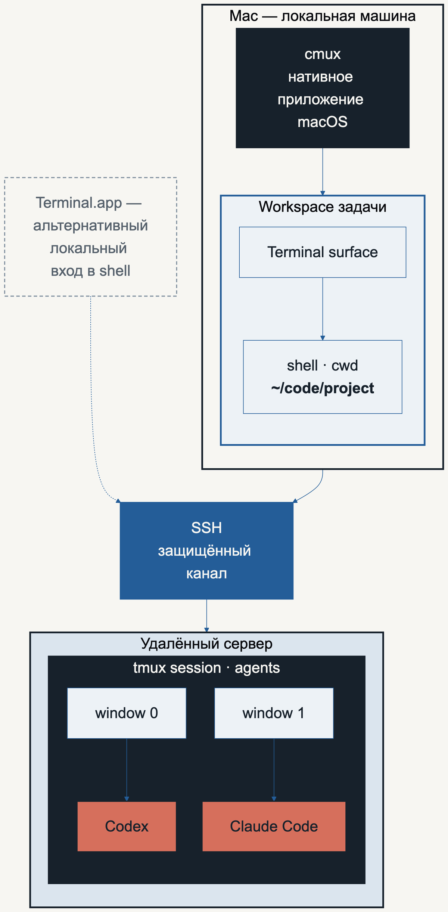
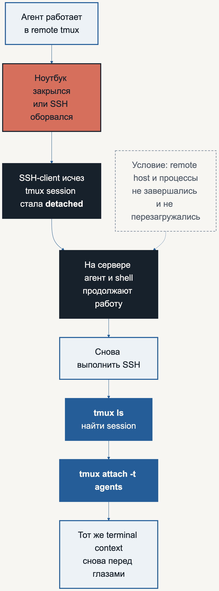
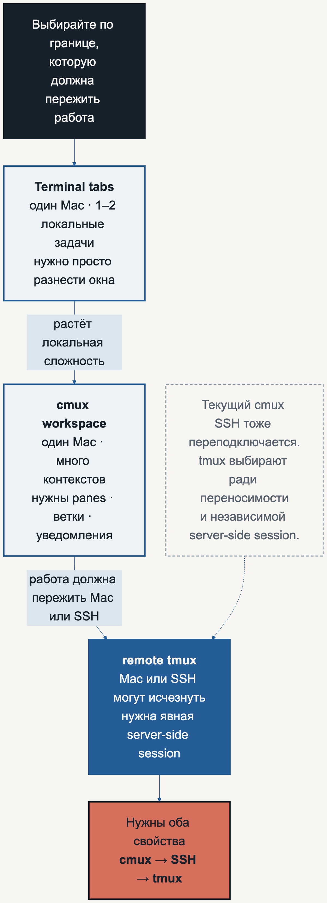

Мультиплексоры для вайб-кодеров: Terminal, cmux, SSH и tmux
Как не потеряться между вкладками, рабочими пространствами и серверами — и оставить coding agents работать после закрытия ноутбука или обрыва SSH.
Когда агент один, всё просто: открыл Terminal, перешёл в проект, запустил Codex или Claude Code. Когда агентов становится несколько, на экране быстро появляются одинаковые чёрные вкладки. В одной агент ждёт разрешения, в другой завершил тесты, в третьей открыт уже не тот проект, а ещё одна вообще ведёт на удалённый сервер.
Я проходил через это в собственной агентной разработке. В моём раннем workflow роль диспетчерской выполнял zellij: одна вкладка на задачу, одна сессия агента на вкладку, отдельный git worktree для изоляции файлов. Инструменты меняются, но проблема остаётся: нужно одновременно видеть несколько работ, не путать их контекст и не терять долгий процесс из-за разорванного соединения.
Главная ошибка — назвать всё это «мультиплексорами» и представить как четыре одинаковых уровня. Terminal, cmux, SSH и tmux решают разные задачи.
Тезис статьи: надёжность даёт не один «лучший мультиплексор», а разделение ответственности. Terminal или cmux организует локальный обзор, shell и cwd задают файловый контекст, SSH переносит ввод и вывод между машинами, а удалённый tmux хранит серверную сессию независимо от подключённого клиента.
В этой статье мы соберём рабочий маршрут для Mac:
локальное приложение → shell и текущая директория → SSH → удалённый tmux → Codex / Claude Code
После этого маршрута вы сможете понять, где сейчас находитесь, что именно принимает ваш ввод, какой слой нужно добавить и как вернуться в живую удалённую сессию.
Исходные условия: Mac с Terminal.app или cmux; для удалённой части — уже настроенный SSH-доступ, установленный на сервере tmux и авторизованный Codex либо Claude Code на той машине, где агент будет выполняться. Установку и защиту сервера этот гайд намеренно не заменяет.
Короткий ответ: это не четыре одинаковых мультиплексора
Вот роли без лишней терминологии.
Таблицу можно прокрутить по горизонтали.
| Слой | Что это | Что он сохраняет или организует | Чего он не гарантирует |
|---|---|---|---|
| Terminal.app | Стандартное терминальное приложение macOS | Локальные окна и вкладки с shell | Продолжение вычислений, пока Mac спит, выключен или перезагружен |
| cmux | Альтернативное нативное терминальное приложение для macOS | Workspaces, panes, surfaces, статусы, уведомления и локальную компоновку | Снимок памяти любого произвольного процесса |
| shell | Интерпретатор команд, обычно zsh на современном Mac | Текущую директорию и окружение конкретной сессии | Сохранение работы после завершения своего процесса |
| SSH | Защищённое соединение с другой машиной | Канал между локальным терминалом и удалённым shell | Самостоятельную жизнь удалённой интерактивной сессии после разрыва канала |
| tmux | Терминальный мультиплексор, работающий на удалённой машине | Серверные sessions, windows и panes независимо от подключённого клиента | Переживание перезагрузки сервера или падения самого процесса агента |
| Codex / Claude Code | Агентные программы, запущенные из shell | Собственную беседу и работу в пределах возможностей конкретного продукта | Роль shell, SSH или универсального менеджера процессов |
Проверенный факт: cmux и tmux находятся на разных уровнях. cmux — приложение macOS с GUI, терминалами и рабочими пространствами. tmux запускается внутри терминала, а его фоновый server хранит сессии на той машине, где был запущен tmux.
Практический вывод: не нужно выбирать одного победителя между cmux и tmux. Полезная комбинация выглядит так: cmux организует работу на Mac, а tmux даёт явную и переносимую границу жизни процесса на сервере.

Терминальный минимум: директория важнее красивого окна
Terminal и cmux показывают терминал. Команды принимает не картинка окна, а запущенный внутри shell. На Mac это чаще всего zsh.
У каждого shell есть current working directory, или cwd: директория, относительно которой выполняются команды. Две соседние вкладки могут выглядеть одинаково, но находиться в разных проектах.
Пять команд закрывают базовую навигацию:
pwd
ls
cd ~/code/my-project
cd ..
cd ~
pwdпечатает полный путь текущей директории;lsпоказывает её содержимое;cd ПУТЬпереходит в другую директорию;cd ..поднимается на уровень выше;cd ~возвращает в домашнюю директорию.
Если в имени есть пробел, путь нужно заключить в кавычки:
cd "My Project"
Безопасная привычка перед запуском агента:
cd ~/code/my-project
pwd
ls
codex
Или вместо Codex:
cd ~/code/my-project
pwd
ls
claude
Codex и Claude Code запускаются из текущей директории и используют её как исходный контекст работы. Точные права доступа зависят от настроек агента, но неверный cwd уже на старте направляет его не в тот проект.
Команда shell и инструкция агенту — разный ввод
Это одна и та же клавиатура, но два разных адресата.
Таблицу можно прокрутить по горизонтали.
| Где находится курсор | Кто читает ввод | Что означает pwd |
|---|---|---|
| В обычной строке shell, до запуска агента | zsh или другой shell | Немедленно выполнить системную команду pwd |
| В интерфейсе Codex или Claude Code | Агент | Текст запроса; агент может решить вызвать shell, объяснить команду или задать вопрос |
Сначала shell получает команду codex или claude и запускает программу. После запуска уже агент получает фразы вроде:
Прочитай README, объясни устройство проекта и ничего пока не меняй.
Это инструкция агенту, а не команда shell.
Чтобы вернуться из текущих версий CLI в shell, в Codex можно ввести /exit или /quit. В Claude Code штатный выход — Ctrl+D дважды с пустой строкой ввода. Интерфейсы развиваются, поэтому встроенная подсказка конкретной версии остаётся авторитетнее статьи.
Наблюдаемый результат простой: снова появился обычный shell prompt, и pwd выполняется напрямую.
Уровень 1. Вкладки Terminal: достаточно для начала
В стандартном Terminal на Mac ⌘T создаёт новую вкладку. В ней запускается новый shell со своей текущей директорией и своими процессами.
Рабочая схема может быть совсем простой:
вкладка 1 → проект A → Codex
вкладка 2 → проект B → Claude Code
вкладка 3 → логи или тесты
Этого достаточно, если одновременно идут одна-две локальные задачи, вы легко различаете вкладки и Mac остаётся рабочей машиной, на которой должны выполняться процессы.
Практическое ограничение: дело не в «слабости» Terminal. Вкладки почти не дают предметной модели агентной работы: задача, ветка, директория и состояние агента остаются в вашей голове. Кроме того, локальная вкладка не обещает, что вычисление будет продолжаться во время sleep, завершения приложения или перезагрузки Mac.
Условие остановки: не добавляйте cmux или tmux только потому, что они популярны. Пока вы без ошибок находите нужную задачу и вам не нужна независимая жизнь процесса, вкладок Terminal достаточно.
Уровень 2. cmux: локальная диспетчерская
cmux — не плагин для Terminal.app и не tmux с красивой темой. Это отдельное нативное приложение macOS, использующее libghostty для отрисовки терминала.
В текущей модели cmux:
window
└── workspace
├── pane
│ ├── surface 1: terminal
│ └── surface 2: browser
└── pane
└── surface: terminal
Workspaces видны в боковой панели. Для них cmux показывает рабочую директорию, git branch, открытые порты и уведомления. Внутри workspace можно делить экран на panes, а surfaces работают как вкладки внутри pane.
Минимальный набор стандартных клавиш:
Таблицу можно прокрутить по горизонтали.
| Действие | Клавиши cmux |
|---|---|
| Новый workspace | ⌘N |
| Перейти к workspace 1–9 | ⌘1 … ⌘9 |
| Новая surface | ⌘T |
| Разделить pane вправо | ⌘D |
| Разделить pane вниз | ⌘⇧D |
| Показать или скрыть левую панель | ⌘B |
| Перейти к последнему непрочитанному уведомлению | ⌘⇧U |
Сочетания настраиваются, поэтому эта таблица описывает defaults, проверенные на момент написания, а не вечный стандарт.
Моя рабочая модель: один workspace — одна задача
Это не требование cmux, а авторский способ снизить путаницу:
workspace = где я наблюдаю задачу
cwd = с какими файлами работает shell и агент
worktree = какая изолированная копия репозитория изменяется
В моём раннем workflow ту же роль визуального контейнера выполняла вкладка zellij. Инвариант полезнее конкретного продукта: одна видимая ячейка работы должна иметь одну понятную задачу и одну директорию.
Наблюдаемый эффект в моей работе был качественным, а не измеренным: стало проще связать видимый терминал с задачей и рабочим деревом. Это опыт одного workflow, а не доказательство, что такая схема быстрее для всех или что cmux обязательно лучше другой диспетчерской.
Git worktree — не терминальная вкладка и не мультиплексор. Он позволяет одному репозиторию иметь несколько рабочих деревьев и держать разные ветки в разных директориях. Если два агента параллельно меняют один checkout, дополнительные вкладки лишь делают конфликт менее заметным. Изоляция файлов — отдельная задача.
Что именно восстанавливает cmux
Текущий cmux умеет восстановить окна, workspaces, panes, рабочие директории, браузерное состояние и scrollback. Для поддерживаемых агентов он может через hooks сохранить native session ID и запустить собственную команду возобновления агента.
Но документация cmux отдельно предупреждает: приложение не делает checkpoint произвольной памяти процесса. Восстановленная картинка терминала и продолжающий работать процесс — не одно и то же.
Отсюда два разных случая:
- Нужно вернуть локальную компоновку и поддерживаемую беседу агента — помогает session restore cmux.
- Нужно, чтобы произвольный процесс продолжал жить на удалённой машине независимо от локального приложения — нужна серверная граница вроде tmux или другого process supervisor.
Уровень 3. SSH: мост на другую машину
SSH-клиент подключает локальный терминал к удалённой машине по защищённому каналу:
ssh user@server.example
После успешного входа shell prompt уже принадлежит серверу. Выполните проверку заново:
pwd
ls
Локальная директория ~/code/my-project и удалённая директория с таким же написанием — разные места на разных машинах. SSH не переносит ваш cwd автоматически.
При первом подключении SSH может показать fingerprint ключа хоста. Не подтверждайте незнакомый fingerprint вслепую: сравните его со значением от администратора сервера или из доверенного канала.
Если интерактивное соединение зависло и обычный ввод не работает, OpenSSH поддерживает escape-последовательность: нажмите Enter, затем в начале новой строки введите ~.. Она закрывает клиентское соединение. Это аварийный выход, а не команда удалённого shell.
Главное ограничение: SSH — канал, а не хранитель интерактивного процесса. При обычном запуске агента прямо в удалённом shell его терминал связан с SSH-сеансом. Для предсказуемого восстановления нужен следующий слой.
А что насчёт встроенного SSH в cmux
В актуальной версии есть команда:
cmux ssh user@server.example --name "Agent server"
cmux создаёт удалённый workspace, умеет переподключаться после обрыва и сохраняет свою remote session. Поэтому утверждение «без tmux любой краткий обрыв обязательно уничтожит процесс» для современного cmux уже слишком сильное.
Мой вывод: tmux всё равно полезен, когда нужна явная серверная сессия, которую можно увидеть через tmux ls и открыть не только из cmux, но и из Terminal, другого ноутбука или обычного SSH-клиента. Это переносимость и независимая граница ответственности, а не обязательная дань традиции.
Уровень 4. tmux: сессия остаётся на сервере
tmux состоит из фонового server и подключаемых clients. Server хранит sessions. В session находятся windows, а в window — panes с терминалами и программами.
Для первого запуска достаточно такого маршрута:
ssh user@server.example
cd ~/code/my-project
tmux new -s agents
codex
Или запустите внутри tmux Claude Code:
claude
Теперь Codex или Claude Code работает в pane сессии agents на удалённом сервере.
Чтобы отсоединиться, но не завершить работу, нажмите последовательность:
Ctrl+b, отпустить, затем d
В документации tmux это записывается как C-b d. Это не одновременное нажатие трёх клавиш: сначала prefix Ctrl+b, затем отдельная клавиша d.
После обрыва связи или намеренного detach вернитесь так:
ssh user@server.example
tmux ls
tmux attach -t agents
Наблюдаемый результат: вы снова видите тот же window, тот же pane и продолжающийся или ожидающий ввода процесс.

Что переживает tmux, а что нет
tmux защищает от закрытого локального окна и разрыва SSH, но это не система бессмертия.
Сессия продолжится, если:
- удалённый сервер не выключен и не перезагружен;
- tmux server не завершён;
- shell и агентный процесс сами не упали и не были остановлены;
- аккаунт не ограничен внешней системой управления ресурсами.
tmux не гарантирует, что агент делает полезную работу. Он может ждать разрешения, исчерпать лимит, потерять доступ к внешнему сервису или завершиться с ошибкой. tmux сохраняет процесс и терминальный контекст, а не качество результата.
Если после подключения tmux ls не показывает нужную сессию, не пытайтесь «attach ещё сильнее». Проверьте, тот ли это сервер и пользователь, не было ли reboot и не завершились ли все windows сессии.
Минимальный безопасный набор клавиш tmux
Ниже — defaults tmux. Пользовательская конфигурация может их изменить.
Таблицу можно прокрутить по горизонтали.
| Последовательность | Результат |
|---|---|
C-b ? |
Показать список клавиш |
C-b d |
Отсоединиться от сессии, оставив процессы работать |
C-b c |
Создать новый window |
C-b n |
Перейти к следующему window |
C-b p |
Перейти к предыдущему window |
C-b 0 … C-b 9 |
Перейти к window по номеру |
C-b % |
Разделить window на panes слева и справа |
C-b " |
Разделить window на panes сверху и снизу |
C-b + стрелка |
Перевести фокус в соседний pane |
C-b o |
Перейти к следующему pane |
Для начала этого достаточно. Намеренно не запоминайте команды уничтожения pane, window и session, пока не привыкнете отличать detach от close.
Особенно осторожно с exit. В обычном удалённом shell команда закрывает SSH-сеанс. В shell внутри tmux она завершает текущий shell; pane может закрыться, а вместе с последним pane закончится и session. Чтобы оставить работу на сервере, используйте C-b d, а не exit.
Полный сценарий восстановления
Предположим, агент выполняет долгую задачу на сервере.
1. Подключиться и создать именованную сессию
ssh user@server.example
cd ~/code/my-project
tmux new -s agents
2. Запустить агента
codex
Дайте агенту конкретную инструкцию и убедитесь, что работа действительно началась.
3. Уйти намеренно
Нажмите C-b d. Вы окажетесь в обычном удалённом shell. Затем можно завершить SSH:
exit
4. Пережить ненамеренный обрыв
Если Wi‑Fi пропал или ноутбук закрылся до detach, отдельного действия не требуется. tmux session станет detached, когда client исчезнет.
5. Вернуться
ssh user@server.example
tmux ls
tmux attach -t agents
6. Проверить не только экран, но и результат
После восстановления спросите агента о состоянии, посмотрите git status, тесты и созданные артефакты. Живой терминал доказывает только то, что сессия сохранилась.
Что выбрать: Terminal tabs, cmux workspace или remote tmux

Практическое правило:
- Terminal tabs — одна-две локальные задачи, всё различимо, продолжение после закрытия Mac не требуется.
- cmux workspace — много локальных или удалённых задач, нужны видимые директории, ветки, panes и уведомления.
- remote tmux — процесс должен иметь явную серверную сессию и быть доступен после обрыва из разных терминальных клиентов.
- cmux + SSH + tmux — нужна и локальная диспетчерская, и переносимая серверная непрерывность.
Это не лестница обязательной сложности. Иногда правильный ответ — только Terminal. Иногда cmux SSH уже закрывает задачу переподключения. Иногда tmux запускают даже из простой вкладки Terminal, потому что GUI вообще не важен.
Семь типичных ошибок
1. «cmux запускает внутри себя Terminal.app»
Нет. Terminal.app и cmux — отдельные приложения. cmux создаёт собственные terminal surfaces на базе libghostty.
2. «Workspace cmux и git worktree — одно и то же»
Нет. Workspace организует интерфейс. Worktree изолирует файлы и ветку. Для параллельных агентов часто нужны оба, но по разным причинам.
3. «SSH сохраняет удалённую работу»
SSH создаёт канал. Непрерывность даёт удалённый tmux, process supervisor или специальный механизм remote session конкретного клиента.
4. «Закрыть окно tmux — то же самое, что detach»
Нет. Безопасное действие для продолжения работы — C-b d. Закрытие последнего shell может завершить сессию.
5. «tmux переживёт reboot сервера»
Обычный tmux хранит состояние в процессах и памяти работающей машины. После reboot нужна отдельная стратегия восстановления задач и состояния.
6. «Если я вижу строку ввода, она принимает shell-команды»
Сначала определите адресата. В shell ls — команда. В агенте ls — текст инструкции, который продукт обработает по своим правилам.
7. «Пять вкладок позволяют пяти агентам безопасно править один checkout»
Вкладки дают параллельность экранов, но не изоляцию файлов. Для независимых задач используйте отдельные репозитории, worktrees или другой осознанный способ разделить рабочие деревья.
Где заканчивается этот гайд
Статья намеренно не покрывает:
- установку и hardening удалённого сервера;
- управление SSH-ключами и сложный
~/.ssh/config; - настройку tmux, плагины и замену prefix;
- Mosh, systemd, launchd, containers и job schedulers;
- подробный workflow git worktrees;
- безопасность unattended-агентов и автоматическое подтверждение действий.
Технические команды и свойства проверены 7 августа 2026 года на macOS 26.5.1 с cmux 0.64.22, tmux 3.6a, OpenSSH 10.2p1, Codex CLI 0.147.0 и Claude Code 2.1.221. Базовые shell-команды и жизненный цикл tmux проверены в изолированном временном каталоге и отдельном tmux socket. Подключение к конкретному боевому серверу и реальный долгий запуск агента через sleep ноутбука не выполнялись: эти детали зависят от SSH, ОС, политик и конфигурации выбранного сервера.
Итог
Хорошая терминальная система начинается не с количества вкладок, а с ясных границ:
Terminal или cmux отвечает: где я смотрю?
shell и cwd отвечают: с какими файлами я работаю?
SSH отвечает: к какой машине я подключён?
tmux отвечает: что продолжит жить без этого подключения?
Codex или Claude Code отвечает: какую задачу выполняет агент?
Начните с вкладок Terminal. Когда задач станет слишком много для памяти — добавьте cmux. Когда процесс должен жить на сервере независимо от ноутбука и конкретного клиента — добавьте tmux.
Не мультиплексируйте хаос. Сначала назовите слой, задачу и директорию — и только затем размножайте сессии.
Источники и границы синтеза
Это практический гайд, а не полный обзор терминальных систем. Авторская часть основана на моём workflow «одна видимая вкладка или workspace на задачу, отдельная сессия агента и отдельный worktree для параллельной разработки». Техническая часть сверена со следующими первичными материалами:
- Apple Terminal User Guide — Open new Terminal windows and tabs — стандартные окна, вкладки и
⌘T. - Apple Terminal User Guide — Execute commands and run tools и Specify files and folders — shell-команды, пути и директории.
- cmux — официальный сайт, Keyboard Shortcuts, SSH и Session Restore — актуальная модель workspaces, surfaces, удалённых сессий и границы восстановления процессов.
- tmux — Getting Started — server/client, sessions/windows/panes, detach, attach и default key bindings.
- OpenSSH manual: ssh(1) — назначение SSH-клиента, синтаксис destination и escape
~.. - OpenAI Docs — Codex CLI и Developer commands — запуск Codex из директории проекта и команды выхода.
- Claude Code Docs — CLI reference, Advanced setup и Interactive mode — запуск и управление интерактивной сессией Claude Code.
- Git — git-worktree Documentation — отличие изолированного рабочего дерева от терминального workspace.
cmux развивается быстро. Свойства его SSH и session restore описаны по официальной документации и локальной версии на дату проверки; перед настройкой автоматического восстановления стоит перечитать актуальные страницы продукта.